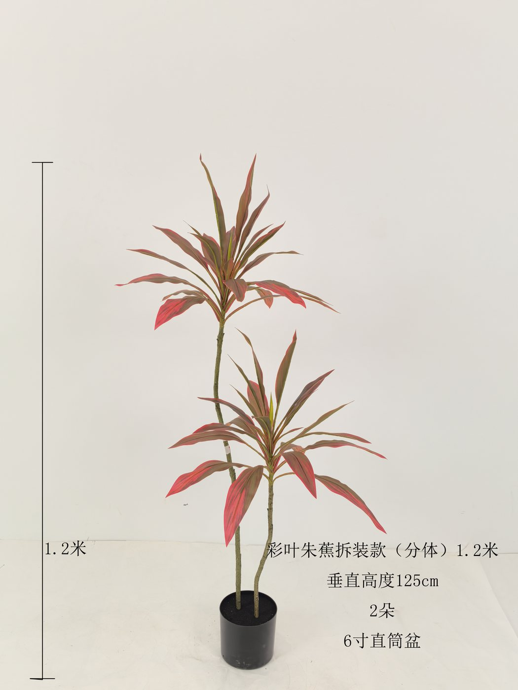
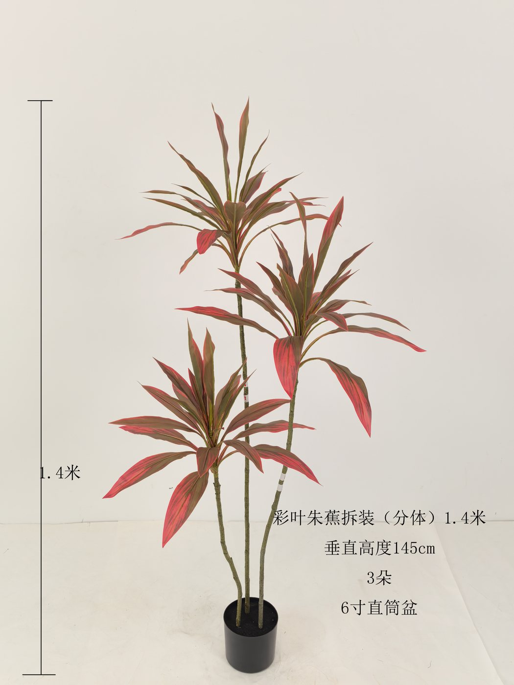
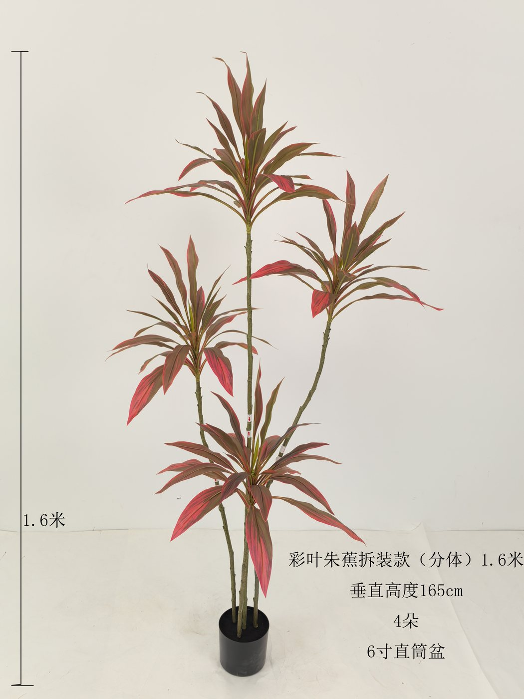

Dracaena & Cordyline
Detachable Colorful Ti Plant
Detachable Colorful Ti Plant is a striking upright plant for modern interiors and container arrangements. The photographs show examples in heights from 120–200 cm. This is a factory photograph of the actual product; exact dimensions, packing, MOQ, lead time and price are confirmed by the seller on inquiry.
Opens your email application; sending happens there.
Product information
Detachable Colorful Ti Plant is a striking upright plant for modern interiors and container arrangements. The photographs show examples in heights from 120–200 cm. This is a factory photograph of the actual product; exact dimensions, packing, MOQ, lead time and price are confirmed by the seller on inquiry.
Specifications
| Heights (from photos) | 120–200 cm |
|---|---|
| Product code | LC-N074 |